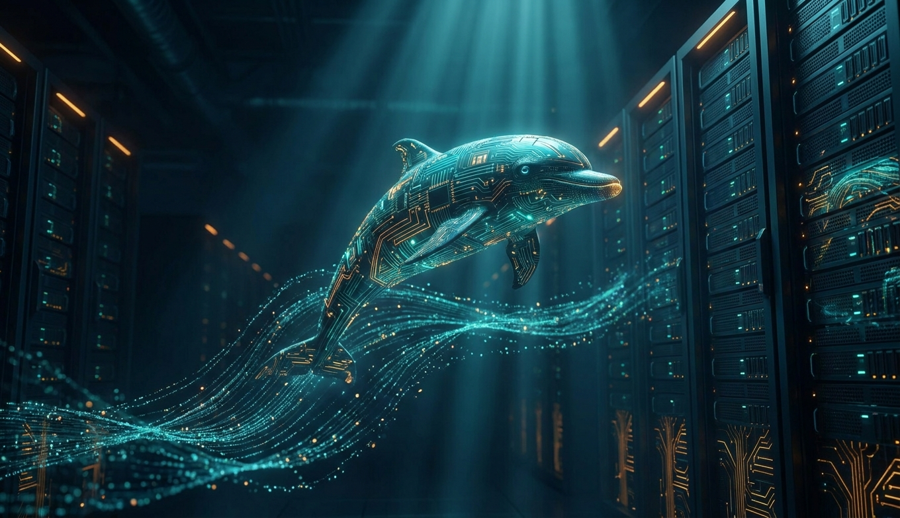

Файл на диске - тоже хранилище. Разница в четырёх буквах ACID, в 55 годах теории Кодда и в том, что база переживает выдёргивание шнура из розетки на середине записи.
Парсер, планировщик, исполнитель, буферный пул, журнал. Что происходит за 200 микросекунд между SELECT и первой строкой ответа - и почему одна и та же строка может существовать в пяти версиях одновременно.
B-tree с 1970 года не имеет конкурентов для точечного поиска и диапазонов. Но у Postgres ещё пять типов индексов, и каждый решает задачу, на которой B-tree бессилен: JSON, геометрия, полнотекст, «содержит подстроку», таблица на 10 ТБ по времени.
Три алгоритма на всю индустрию: Nested Loop, Hash Join, Merge Join. Планировщик выбирает между ними по статистике, и ошибка в оценке в 100 раз превращает 2 мс в 2 минуты. MySQL 20 лет жил с одним из трёх.
Самая расширяемая СУБД в истории: типы, операторы, индексы и даже планировщик подменяются расширениями. Отсюда PostGIS, TimescaleDB, pgvector, Citus - и pg_trgm, три буквы, ради которых половина проектов не ставит Elasticsearch.

Facebook, YouTube, Wikipedia, Booking, Uber - все начинали и многие остались на MySQL. Простой, быстрый по PK, с репликацией, которая настраивалась за 5 минут в 2005-м. И с набором тихих сюрпризов, из-за которых половина индустрии перешла на Postgres.
Яндекс.Метрика в 2016 открыла движок, который делает GROUP BY по 20 триллионам строк. Секрет - колонки вместо строк, сжатие в 10 раз, векторное исполнение и полный отказ от всего, что мешает: транзакций, точечных UPDATE, честных JOIN.
Oracle - $50 тысяч за ядро и лучший оптимизатор на планете. SQLite - бесплатно и в каждом телефоне. Между ними MSSQL для корпоративной Windows и DuckDB, который делает аналитику на ноутбуке.
Redis отвечает за 100 микросекунд, Cassandra принимает миллион записей в секунду на 100 нодах, MongoDB хранит документ как есть. Каждая из них отказалась от чего-то, что реляционные базы считают священным - и именно поэтому решает свою задачу.
Инвертированный индекс ищет слово среди миллиарда документов за миллисекунды - и не умеет ничего из того, ради чего существуют базы: транзакций, консистентности, целостности. Elastic, Sphinx, Solr, Manticore - это индексы поверх базы, а не вместо неё.
Вещи, которые не пишут в документации, но которые определяют, спишь ты ночью или нет: нормализация без фанатизма, пагинация без OFFSET, партиции вместо DELETE, бэкап, который реально восстанавливается, и пять метрик, на которые надо смотреть.
Всё, что было выше, сводится к одному вопросу: сколько страниц по 8 КБ нужно прочитать, чтобы ответить на запрос. B-tree - чтобы их было три. Колонки - чтобы они были плотные. MVCC - чтобы читать их, не ожидая никого. WAL - чтобы после выключения света они остались. Планировщик - чтобы угадать, каких страниц меньше. Триграммы - чтобы страницы нашлись даже по обрывку слова.